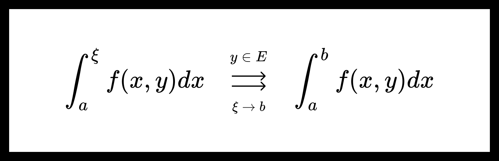

Равномерная сходимость несобственных интегралов с параметрами. Критерий Коши.
Равномерная сходимость несобственных интегралов с параметрами.
Пусть дана функция f(x,y):[a,b)×E→R. Также пусть для ∀ξ∈[a,b) ∀y∈E существует интеграл ∫aξf(x,y)dx в собственном смысле.
Определение. Говорят, что несобственный интеграл ∫abf(x,y)dx сходится поточечно на множестве E, если существует функция ψ(y), для которой
∫aξf(x,y)dx ξ→b⟶y∈E ψ(y).
Определение. Говорят, что несобственный интеграл ∫abf(x,y)dx сходится равномерно на множестве E, если существует функция ψ(y), для которой
∫aξf(x,y)dx ξ→b⇉y∈E ψ(y).
Предельную функцию ψ(y) обозначают как
∫abf(x,y)dx:=ψ(y).
Критерий Коши.
Теорема. Критерий Коши равномерной сходимости несобственного интеграла с параметрами.
Пусть дана функция f(x,y):[a,b)×E→R. Также пусть для ∀ξ∈[a,b) ∀y∈E существует интеграл ∫aξf(x,y)dx в собственном смысле.
Несобственный интеграл ∫abf(x,y)dx сходится равномерно на множестве E тогда и только тогда, когда
∀ε>0 ∃Aε∈(a,b) ∀ξ1,ξ2∈(Aε,b) ∀y∈E
∫ξ1ξ2f(x,y)dx<ε.
Доказательство:
Достаточно сослаться на Критерий Коши равномерной сходимости функции, рассмотрев равномерную сходимость функции
F(ξ,y)=∫aξf(x,y)dx.